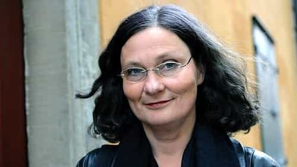
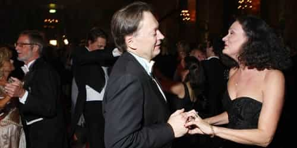

< < < Back
Man Shares Hard-Earned Wisdom After Being Married To A Swedish Feminist For 25 Years – Return Of Kings
I want to share with you a selection of quotes from a new book I’ve just read. The book, called Den sista grisen (The Last Pig), is basically a collection of aphorisms, short sentences or paragraphs filled with important meaning. The author is Horace Engdahl, a famous writer and intellectual in Sweden. He’s a member of the Swedish Academy, which might be best known for yearly deciding who will win the Nobel Prize in Literature.
Another thing that Horace Engdahl is known for is that he was married to a prominent Swedish feminist, Ebba Witt-Brattström, from 1989 to 2014. How such a gifted man could have married a harpy like that is beyond me, but the experience obviously had an affect on his thinking and writing. Den sista grisen has gotten attention from the leftist critics for being somewhat anti-feminist. Below I will give you a few examples of what he’s written, that makes feminist blood boil.
I’ve done the translations to English myself. Some expressions may sound strange, but I hope you get the big picture.
“The natural way for a man is to be pleased with himself”
A woman’s contempt for a man can in some cases be excessive, greater than natural size. What triggers her reaction is the sense of how pleased this man is with himself and how important he feels, feelings which she knows she can’t achieve on her own and which she therefore furiously revolts against.
But the natural way for a man is to be pleased with himself and feel important. The one who dislikes that might as well hang herself in the attic.
I like this quote because it’s about how some women have a way of hating and at the same time adoring masculine men. They hate the way masculine men don’t need anyone’s approval to be happy with themselves, least of all the approval of women. Yet they want to be like that too, but can’t, because it’s not in their nature—and that’s why they refuse to admit to themselves that this innate female nature exists. More on that point later.

The feminist harpy he wasted 25 years of his life living with.
“In a young man’s mind there is an innermost room”
In a young man’s mind there is an innermost room, and in it there’s only space for one thing, himself. To expect something else or to demand something else, now or ever, would be foolish.
What doesn’t fit in the young man’s center, namely everything else, is put in the waiting room. There sits his girlfriends, his ambitions, society, God and the devil. Maybe one day they’ll be allowed to enter, maybe not. But until further notice, the inner room, the most sacred, is occupied. God is not angered by this, and therefore no one else should be either.
Toward the end, when the no longer young man shall die, he notices that the others have taken over his center and driven him out to the waiting room. That’s how he knows it’s time to turn off the lights and leave.
In a young woman’s mind there is an innermost room, and this center is empty, not even she herself is there. She sits outside waiting for someone to fill it. Then comes the friends, the men, the children, society, God and the devil and answer her call, and she steps in and places herself among all of this that is her life.
One day she notices that she’s become alone in there. Those who came have gone away, she might even have drove them off. Then she understands that it’s time to turn off the lights and close. But it would be good if she first wrote some lines about how it feels. We already know everything about the man’s loneliness.
Women have a void in themselves waiting to be filled by a man. If it’s not filled, they feel as if they have nothing to live for, and they respond with anger. This explains why man-hating feminists are so miserable. The question is whether no man wanted them from the start, and they turned to feminism for answers, or if they turned to feminism and men suddenly stopped paying them any attention.

Scene from a failed marriage.
“The human is not only a part of nature but also has a nature”
The human is an animal that can’t stand its own nature. This expresses itself in, among other things, that she with the help of philosophical arguments tries to prove that she doesn’t have a nature but that she is an infinitely malleable being, which realizes itself in the form of conscious projects, where she through sheer will transforms herself to what her reason has freely chosen. Other more exact sciences would however suggest that the human is not only a part of nature but also has a nature in the sense of a great number of species-specific and gender-specific qualities.
History shows that there’s a considerable regularity in the human’s basic behavior: the formation of hierarchies, the suspiciousness toward strangers, tendencies in the sexes’ choice of partners and a number of virtues and vices known through all times. However, to admit this these days is considered more inappropriate than ever before. By that you can draw the conclusion that human nature has never been perceived as more repulsive than right now.
The enlightened human has become hypersensitive to her own image and in rage breaks the mirrors held up by the annals and the classics. It’s no wonder that there are loud demands for theaters to stop playing old plays! Without banning the old masters, erasing history will be incomplete, and only by erasing history will it be possible to forget the nature you have come to hate and toward which you feel so powerless.
The first step in healing this broken, degenerate society is to admit that we have a nature. A human nature that we either embrace or waste the rest of our lives fighting. One important key to happiness and success is knowing who and what you really are, not what some Marxist professor preaches that you should be. Understanding and embracing our nature is needed to combat the forces trying to destroy every good thing that we have built so far.
Lastly, I want to share a short quote that reminded me of Roosh and his experiences with the media earlier this year.
It is easy to create a monster. Put a journalist on the case!
 If you like this article and are concerned about the future of the Western world, check out Roosh's book Free Speech Isn't Free. It gives an inside look to how the globalist establishment is attempting to marginalize masculine men with a leftist agenda that promotes censorship, feminism, and sterility. It also shares key knowledge and tools that you can use to defend yourself against social justice attacks. Click here to learn more about the book. Your support will help maintain our operation.
If you like this article and are concerned about the future of the Western world, check out Roosh's book Free Speech Isn't Free. It gives an inside look to how the globalist establishment is attempting to marginalize masculine men with a leftist agenda that promotes censorship, feminism, and sterility. It also shares key knowledge and tools that you can use to defend yourself against social justice attacks. Click here to learn more about the book. Your support will help maintain our operation.
Read More: Should A Wise Man Get Married?